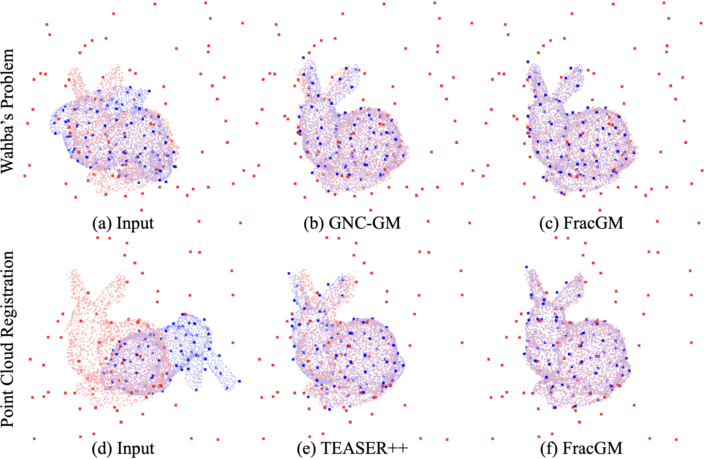

Point cloud registration is a well-knowned problem in robotics and computer vision. Suppose that we have two sets of 3D point clouds, we want to find a spactial transformation between the two point clouds, for example, a rotation matrix or a translation vector.

Standford bunny dataset.
Here is a quick example, the left figures are the input data, and we are using the darker red and blue points, while the lighter points are only for visualization purpose. Both blue and red point clouds has 100 points with 80 percent of them are ouliters. What we are trying to do here is to align the darker blue points onto the darker red points, where there are a lot of mis-information.
Problem statement
Lets write it into equations. Again, suppose that we two sets of 3D point clouds \(\{a_i\}_{i=1}^n\) and \(\{b_i\}_{i=1}^n\) , we multiply a rotation \(R\in\text{SO}(3)\) onto \(a_i\), and add a translation \(t\in\mathbb{R}^3\) onto it, then idealy equals \(b_i\)
$$ b_i\approx Ra_i+t+\varepsilon_i, $$ where \(\varepsilon_i\sim\mathcal{N}(0,\sigma_i^2I_3)\) follows the isotropic Gaussian distribution. One can simply apply least squares, or equivalently, the maximum likelihood of normal distribution is a least squares problem, we get the objective of point cloud registration
$$ \min_{R\in\text{SO(3)},t\in\mathbb{R}^3}\sum_{i=1}^n\frac{1}{\sigma_i^2}\|b_i-(Ra_i+t)\|^2 \iff \min_{X\in\text{SE}(3)}\sum_{i=1}^n\frac{1}{\sigma_i^2}\|\bar{b}_i-X\bar{a}_i\|^2,\tag{1} $$ where \(\bar{a}_i,\bar{b}_i\) are homogeneous coordinates.
Horn [1] proposed a closed-form solution for Problem \((1)\) by decoupling the problem to rotation and translation sub-problems (and also assume that there is no noise in the model). Decouple approaches [2] typically first solves the rotation estimation problem by omitting the translation, and after we get a estimated rotation, the original problem becomes the translation estimation that is a linear least squares. In this case, translation depends heavily on how well the rotation is estimated, and the rotation are often poorly estimated since it omits translation information entirely. Yang [3] constructed Translation Invariant Measurements for the rotation estimation problem, results in better estimation but increases the measurement number complexity up to \(\mathcal{O}(n^2)\).
In this note, we focus on approaches that directly solves Problem \((1)\), that is, we directly deal with the variable \(X\in\text{SE}(3)\). Wiki also has a comprehensive survey on point cloud registration solvers, I highly recommened you read it.
Quadratic program
We first rewrite the objective of Problem \((1)\) to quadratic form: $$ \begin{aligned} \sum_{i=1}^n\|b_i-Ra_i-t\|^2&=\sum_{i=1}^n(Ra_i+t-b_i)^\top(Ra_i+t-b_i)\\ &=\sum_{i=1}^nx^\top\underbrace{\begin{bmatrix}a_i^\top\otimes I_3&I_3&-b_i^\top\end{bmatrix}^\top \begin{bmatrix}a_i^\top\otimes I_3&I_3&-b_i^\top\end{bmatrix}}_{M_i}x\\ &=x^\top\Big(\sum_{i=1}^nM_i\Big)x\\ &=x^\top Mx \end{aligned} $$ where \(x\) is transformed from \(X\) by vectorizing \(R\), concating \(t\), then apply homogeneous coordinate. We denote the transformation as \(\text{vec}(\cdot)\) for notation simplicity: $$ \text{vec}:\mathbb{R}^{4\times4}\to\mathbb{R}^{13}\ ;\ \ \begin{pmatrix} X_{1:3,1}&X_{1:3,2}&X_{1:3,3}&X_{1:3,4}\\ *&*&*&*\end{pmatrix}\mapsto\begin{pmatrix} X_{1:3,1}\\ X_{1:3,2}\\ X_{1:3,3}\\ X_{1:3,4}\\1\end{pmatrix} $$
$$ X=\begin{pmatrix}R&t\\0^\top&1\end{pmatrix}\implies\text{vec}(X)=\begin{pmatrix} R^{(1)}\\ R^{(2)}\\ R^{(3)}\\ t\\1\end{pmatrix} $$
That is, Problem \((1)\) can be written as an equivalent (non-convex) quadratic program: $$ \begin{aligned} \min_{x\in\mathbb{R}^{13}}&x^\top Mx\\ \text{s.t. }&R\in\text{SO}(3)\\ &e_{13}^\top x=1 \end{aligned}\tag{2} $$
Solving non-convex QP
Linear relaxation
This idea is simple but actually quite practical and can be found in various literature, we just relaxation the \(\text{SO}(3)\) constraints. $$ \begin{aligned} \min_{x\in\mathbb{R}^{13}}&x^\top Mx\\ &e_{13}^\top x=1 \end{aligned} $$
Reference
[1] Horn, B. K. (1987). Closed-form solution of absolute orientation using unit quaternions. Josa a, 4(4), 629-642.
[2] Carlone, L., Tron, R., Daniilidis, K., & Dellaert, F. (2015, May). Initialization techniques for 3D SLAM: A survey on rotation estimation and its use in pose graph optimization. In 2015 IEEE international conference on robotics and automation (ICRA) (pp. 4597-4604). IEEE.
[3] Yang, H., Shi, J., & Carlone, L. (2020). Teaser: Fast and certifiable point cloud registration. IEEE Transactions on Robotics, 37(2), 314-333.